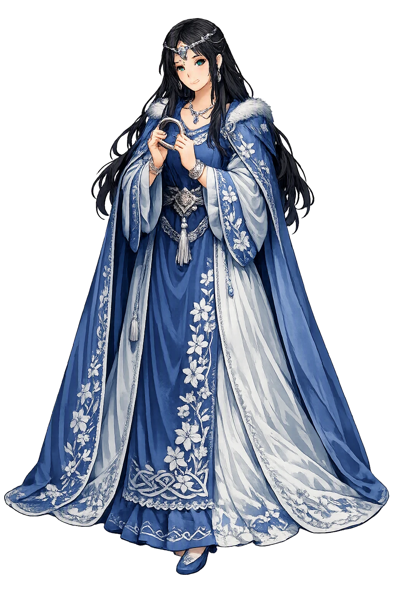
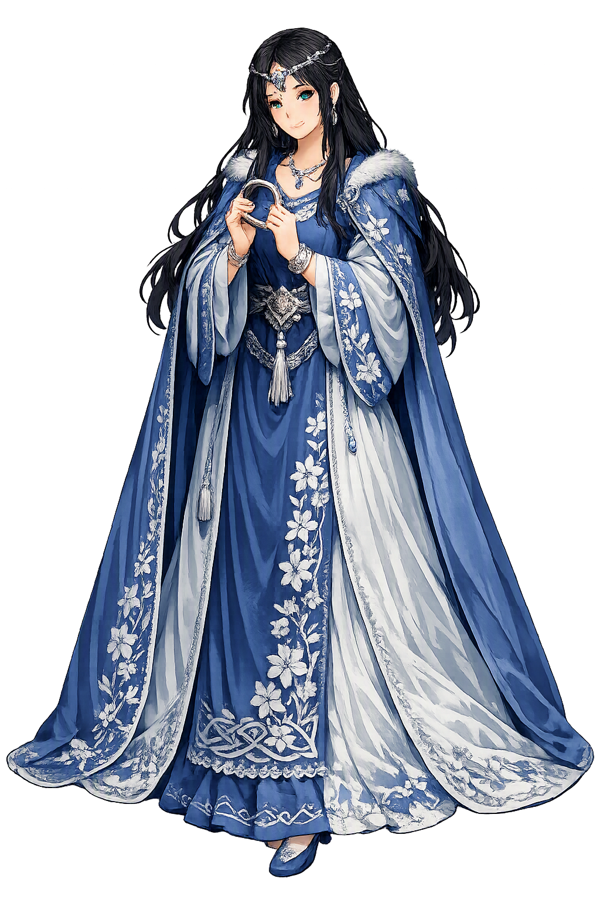

Unicode restoration and ASCII comparison
ᚾᛅᚾᚾᛅ
The name in its original Norse form. Nanna (ᚾᛅᚾᚾᛅ) is attested in the source tradition — “Mother, daring”. Its original diacritics and script distinctions carry the full phonetic and orthographic weight of the source tradition.
nanna
The plain nanna form is identical to the Unicode restoration. Because this name is already written in Latin letters, no diacritics, stress, or script information were lost — only capitalization differs.
Nanna
The Unicode restoration does not need to recover lost marks for Nanna. Its value is canonical spelling and consistent cataloguing, not the reconstruction of erased orthography. The domain is readable as-is to both DNS and humanity.
Nanna.com → nanna.com
The non-ASCII characters in Nanna are encoded while the ASCII remains visible. To the DNS, it is Punycode. To humanity, it is Nanna.
How Nanna travels from ancient script to the modern URL
Owned, ideal, and ASCII forms of Nanna
Nanna
Restores ᚾᛅᚾᚾᛅ. The full Unicode restoration. nanna.com is not in the PuniCodex collection — it is watched for release; if it drops, this temple upgrades to an owned flagship.
How Nanna was spoken
The Wife Who Followed into the Fire
Nanna, daughter of Nepr, is the wife of Baldr the Good and the mother of Forseti — and the only figure in the Norse corpus who dies of a broken heart. When she saw her husband laid on his pyre aboard Hringhorni, her heart burst with grief, and the Æsir laid her on the fire beside him. In Hel she keeps her place at his side, and when Hermóðr comes to ransom the dead god, it is Nanna who sends gifts back up the road: a linen robe for Frigg, a gold ring for Fulla — love's tokens out of the land of the dead.
The robe of linen Nanna sent from Hel to her mother-in-law — a household gift carried up the nine-night road by Hermóðr, proof the dead still keep their obligations of love.
The gold finger-ring for Frigg's maid Fulla, Baldr's sister-in-law by the goddess's own household — the small exact kindness of a woman who remembers her friendships even in death.
The one death in the Edda that needs no weapon: seeing Baldr on the pyre, Nanna's heart burst with grief, and she was laid on the fire beside him.
The hall of gold and silver in heaven where her son Forseti dwells, stilling all strife — the living continuation of the house Nanna and Baldr began.
Stories of Nanna
Nanna's dossier is among the shortest in the Edda and among the most devastating: she is named, married, widowed, dead of grief, and found again in Hel — in scarcely more lines than that. Snorri gives her the two moments the tradition never forgot, and Saxo gives her a second life as a wooed princess; between them stands a figure made almost entirely of devotion.
Snorri names her in the catalogue of the Æsir's houses with genealogical economy: Baldr's wife is Nanna, daughter of Nepr, and their son is Forseti. Of Nepr nothing else is told — the father exists only to place the daughter. The son, by contrast, inherits a hall and an office: Forseti dwells in Glitnir, the hall whose pillars are red gold and whose roof is silver, and there he stills all strife, the great reconciler of gods and men. Grímnismál keeps the same hall in its numbered survey of heaven's dwellings.
The ásynja þulur preserved with Skáldskaparmál hold Nanna in the catalogue of the goddesses by name, beside Hlín and Sól. Beyond these notations the corpus gives her no adventure, no quarrel, no single act in life: the tradition saves everything for her death, and for what she does after it.
When Baldr fell to the mistletoe and the Æsir could neither weep nor take vengeance in the sanctuary, they bore him to the sea and brought out Hringhorni, his ship, the greatest of all ships. The giantess Hyrrokkin launched it with one shove, and the gods built the pyre on board. Then comes the sentence that defines Nanna for all time: when she saw her husband's body carried to the ship, her heart burst with grief, and she died. She was laid on the pyre beside him, and the fire was kindled. Óðinn laid the ring Draupnir on the flames; Þórr hallowed the pyre with Mjölnir; Baldr's horse was led to the fire with all its gear.
No weapon touches her; no enemy wills her death. In a corpus full of spear-thrusts and poisoned cups, hers is the one death by love alone — the Norse tradition's starkest statement that grief itself can kill, and that the gods are not exempt.
Hermóðr the Bold rides nine nights through dark valleys to ransom Baldr, and in Hel's hall he finds his brother in the high seat — and Nanna is there, keeping her place beside him in death as in life. Hel sets the famous condition: all things in the world, living and lifeless, must weep Baldr out. When Hermóðr turns for home, the dead send tokens with him. Baldr sends the ring Draupnir back to Óðinn — and Nanna sends a robe of linen to Frigg, her husband's mother, with other gifts, and a gold finger-ring to Fulla, Frigg's trusted maid.
The detail is small and it is the whole of her: in the land where nothing returns, she answers the errand with household gifts — a robe for the mother, a ring for the friend. The ransom fails at Þökk's dry tears, and Nanna and Baldr remain in Hel together. Even Völuspá's promised return after Ragnarǫk names Baldr and Höðr reconciled, and does not name her; the poem leaves her where Snorri left her, at her husband's side.
Saxo Grammaticus gives Nanna the fuller life the Icelanders withheld — and a different husband. His Nanna is the daughter of Gevarus, king of Norway, and Høtherus, Gevarus's foster-son, loves her. When Høtherus sues for her hand, she answers with one of Saxo's set speeches: mortal and demigod are ill-matched, she warns, and unions across that boundary end in sorrow — the maid argues theology against her own marriage. But Balderus, son of Odin, has seen her and burns for her too, and the rivalry becomes war. Høtherus, armed with the sword Mimming won from the satyr Mimingus, defeats the gods' fleet at sea — even Thor's club is cleft — and wins Nanna's hand.
Only later, in the renewed feud, does Høtherus wound the invulnerable Balderus with the one blade that can harm him. Where Snorri's Nanna is the wife who dies on her husband's pyre, Saxo's is the bride two rivals bleed for — the same woman read as devotion in Iceland and as desire's prize in Denmark. The two portraits never meet, and together they prove the Baldr cycle was told up and down the North in irreconcilable keys.
Nanna is the Edda's proof that grief is not a lesser fate than battle. Every other death in the Baldr cycle is negotiated — prophesied, sworn against, tricked, ransomed, avenged. Hers alone simply happens, at the sight of the pyre, and the narrative grants it without comment, as if the gods understood this was a death no oath could have prevented. And then the tradition does something finer still: it lets her act after death. From Hel, where nothing returns, she sends a robe and a ring — not pleas, not prophecy, but the remembered kindnesses of a daughter-in-law and a friend. The ransom fails; the gifts arrive. In a mythology hurtling toward Ragnarǫk, Nanna is the small, exact consolation: that love keeps its accounts even in the land of the dead, and pays them in linen and gold.
Enter Extended Lore